A base de leads do projeto identifica 16 plantas, 72 motores e 131 turbocompressores no Brasil. As listas de prospecção nomeiam mais 50 contas em Suape e no Porto do Recife. É trabalho real e bem feito. O que falta é o que transforma uma lista de nomes em pipeline: quantos equipamentos cada conta tem, quanto gasta por ano, e quem decide.
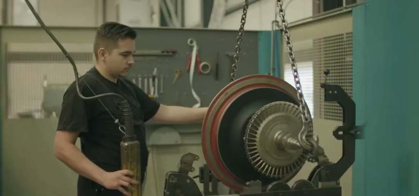
Rotor em bancada · o ativo que gera a recorrênciaO material trata o mercado em três recortes com maturidades muito diferentes, e nenhum documento os consolida. Isso é a causa raiz de o modelo financeiro só ter conseguido trabalhar com cinco plantas.
16 plantas, 72 motores, com marca e modelo de turbo por linha e nível de confiança declarado. É a camada mais concreta.
Suape e Porto do Recife, com prioridade e oferta sugerida por conta. Qualitativa: nomeia, mas não dimensiona.
Apenas Pernambuco, 62 turbos. É o único recorte com valor monetário, e deixa 69 turbos mapeados de fora.
Implicação comercial direta: 72% da base é ABB, hoje Accelleron. Nenhum prestador independente europeu pesquisado tem autorização formal desse fabricante. É característica estrutural do mercado, e define o discurso que a concorrência vai usar.
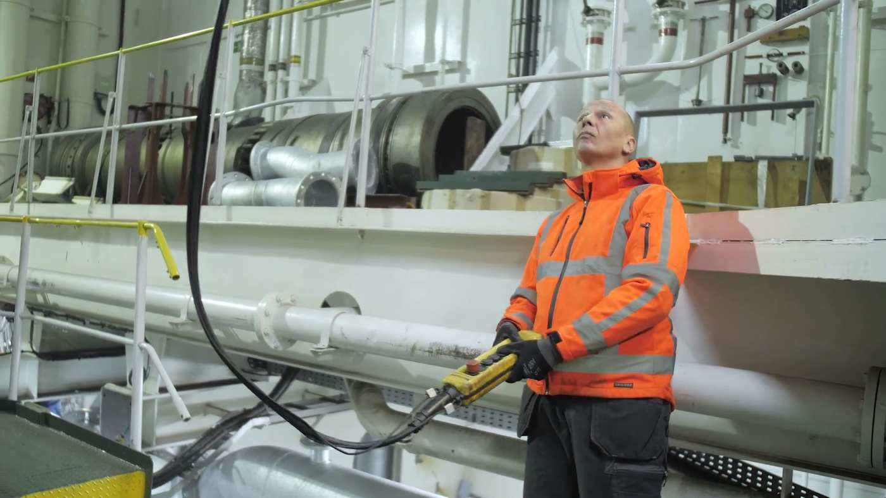
É o gasto anual de referência por turbocompressor, derivado do próprio modelo financeiro do projeto: peças, preventiva, emergência e engenharia somados. Multiplicado pela base mapeada, é o tamanho real da mesa. Só que o valor cai com a potência, e é por isso que a ordem em que as contas são atacadas decide o resultado.
Distância importa mais que tamanho neste negócio. Um turbo de 3,5 toneladas não viaja barato, e a proposta de valor é tempo de resposta.
Vinte motores Wärtsilä W32 e 40 turbocompressores estimados, a maior contagem individual de toda a base. Fica a 190 km de Suape, mais perto que Petrolina, que está no modelo financeiro. E ficou inteiramente de fora dele. A contagem está marcada como estimativa de confiança média e precisa ser validada em campo, mas se confirmar, vale sozinha um mercado comparável ao da planta âncora do projeto.
Pontuação de 0 a 100 combinando quatro fatores: quantidade de turbos, acessibilidade jurídica da conta, proximidade e existência de gatilho comercial ativo. Contas sob contrato de operação e manutenção de terceiro perdem pontos porque o dono da usina pode não ter liberdade para contratar.
A pontuação é ferramenta de priorização, não avaliação de mercado. Nenhuma conta tem gasto anual estimado, porque esse dado não existe na base.
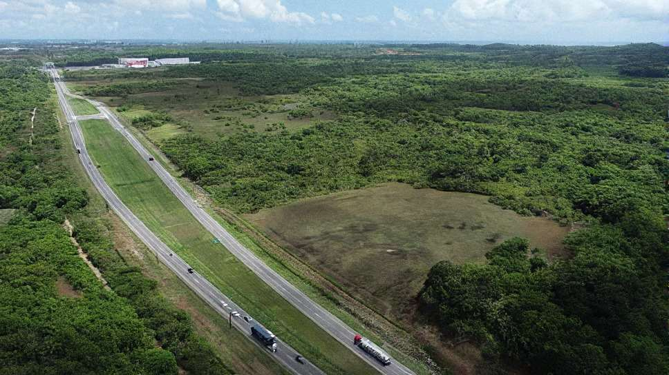
Este é o terreno proposto no Complexo de Suape. Independente de a unidade sair do papel, a geografia já ordena a carteira: Termocabo, Refrescos Guararapes e Coca-Cola somam 18 turbos dentro de Pernambuco, atendíveis no mesmo dia por estrada.
Prospecção fria vende conceito. Prospecção com gatilho apresenta solução para um problema que o cliente já reconheceu publicamente. Estes dois estão documentados em fonte oficial e não aparecem em nenhum documento do projeto.
A Energética Suape II foi autuada e multada em R$ 142.574,99, com a penalidade mantida em julgamento pela diretoria da ANEEL, por operação e manutenção inadequada da usina.
Uma planta já penalizada por manutenção inadequada tem sensibilidade demonstrada, documentada e pública ao tema. A abordagem não precisa vender o conceito, só apresentar a solução.
Auto de Infração nº 35/2015 · dados abertos ANEEL
O contrato de operação e manutenção da Wärtsilä com a Termocabo, assinado em abril de 2022, tinha validade explicitamente amarrada ao vencimento do PPA em 2025.
Estamos em julho de 2026. O status atual é desconhecido, e essa é uma verificação de custo quase zero que pode abrir ou fechar a porta da conta mais próxima de Suape.
Comunicado oficial Wärtsilä · 13/06/2022
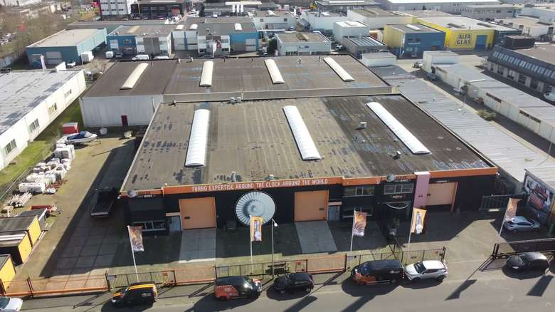
Carcaça corroída · o argumento visual mais forte que existeO leilão de reserva de capacidade de março de 2026 contratou 501 MW de térmica a óleo e diesel com contratos de apenas três anos e operação declaradamente flexível.
Usina flexível parte e para muitas vezes. Ciclagem térmica fadiga roda de turbina e mancal muito mais que horas acumuladas em regime estável. E contrato de disponibilidade com penalidade torna o dono da usina mais sensível a parada do que era no modelo antigo de PPA de energia.
A transição energética não está encolhendo este mercado. Está intensificando a manutenção por MW instalado.
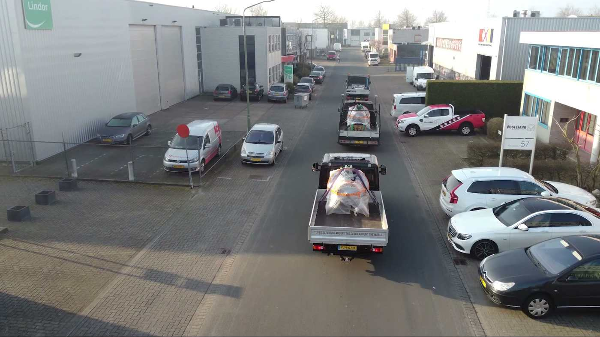
As listas nomeiam estaleiros, rebocadores e terminais, mas não há uma única contagem de turbocompressores embarcados. Pode ser o maior segmento da carteira e hoje é uma incógnita completa. Cada mensagem daqui em diante muda conforme o segmento.
Uma mensagem só para todas as contas é o erro mais comum e mais caro. As três dores são estruturalmente diferentes, e a terceira tem um pré-requisito que ainda não foi resolvido.
Suape II, Termocabo, Petrolina, Borborema, Camaçari. Fala-se de ciclagem térmica e de multa contratual, não de preço de hora.
Aproximadamente 118 dos 131 turbos
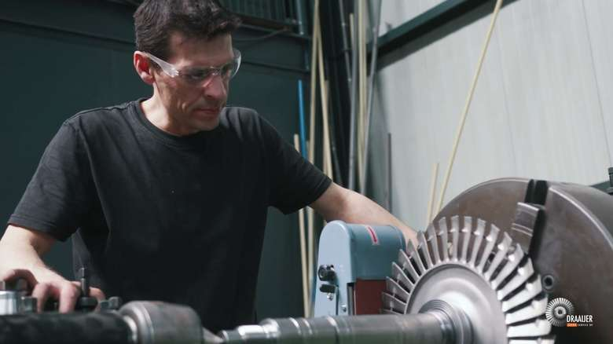
Coca-Cola, Refrescos, Coteminas, MRN, REMAN. Aqui o turbo não gera receita, ele sustenta produção. O argumento é previsibilidade, não emergência.
Cerca de 30 turbos, e a referência de custo do modelo
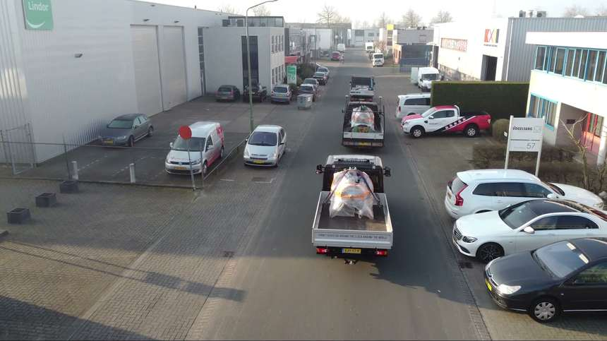
EAS, Vard Promar, rebocadores, terminais. Maior potencial de volume e o único segmento bloqueado por pré-requisito: aprovação como service supplier por sociedade classificadora.
Não prospectar antes de resolver a certificação
| Cargo | Papel real na decisão | Prioridade |
|---|---|---|
| Engenheiro de confiabilidade | Sente a dor do downtime, não tem meta de corte de custo. É quem inicia. | 1ª |
| Gerente de manutenção | Dono do orçamento de manutenção e do indicador de disponibilidade. | 2ª |
| Gerente da planta | Responde pela penalidade contratual. Entra quando o valor já está claro. | 3ª |
| Comprador técnico | Não inicia compra técnica neste setor, mas trava. Envolver cedo evita retrabalho. | 4ª |
| Operadora sob O&M | Onde existe contrato de terceiro, ela é a cliente, não a usina. | Verificar 1º |
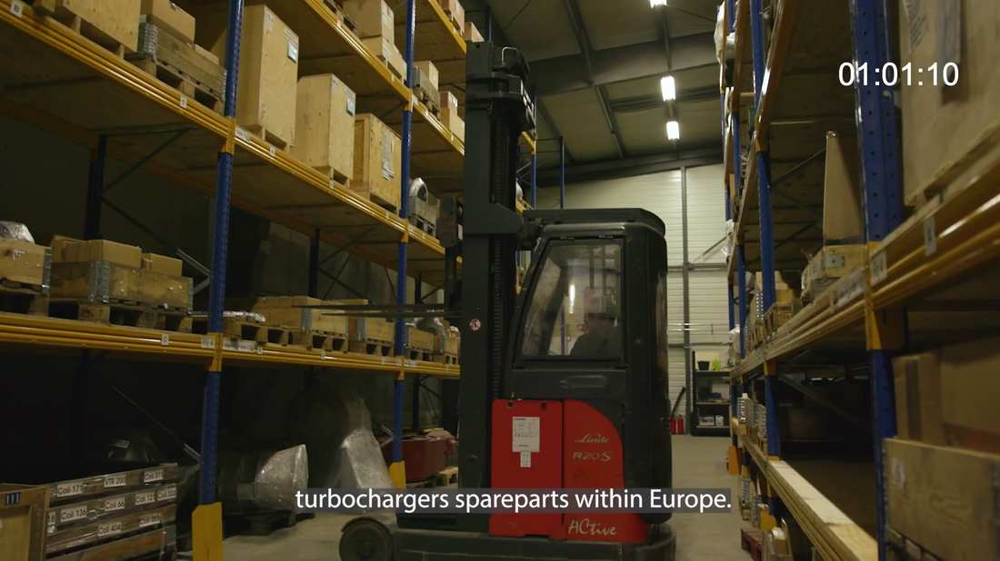
As duas linhas de maior margem do modelo, reparo de emergência a 55% e suporte de engenharia a 65%, não dependem de fábrica. Dependem de estoque e de tempo de resposta. É por isso que a sequência abaixo começa por qualificação, e não por obra.
Cada passo alimenta o seguinte. Fazer fora de ordem produz reunião sem fechamento, que é o desperdício mais caro em venda técnica de ciclo longo.
Oficina vende hora de bancada e compete por preço. Pool de unidades de intercâmbio vende disponibilidade: o cliente recebe uma unidade revisada na hora e entrega a dele. O downtime cai de dias para horas, a receita vira contrato, e o cliente fica preso ao pool. É o mesmo orçamento de estoque com finalidade diferente.
Quadros extraídos dos cinco vídeos recebidos. Serve de prova técnica na abordagem: é o que a oficina faz, não o que ela promete.
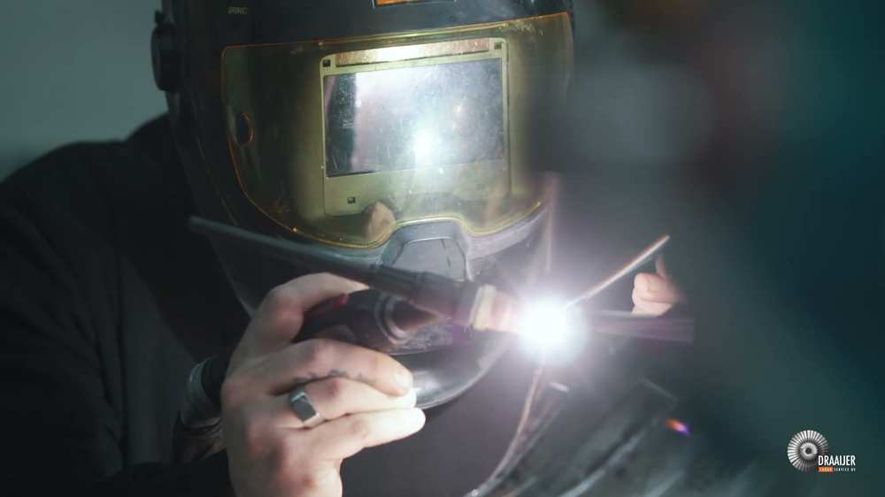
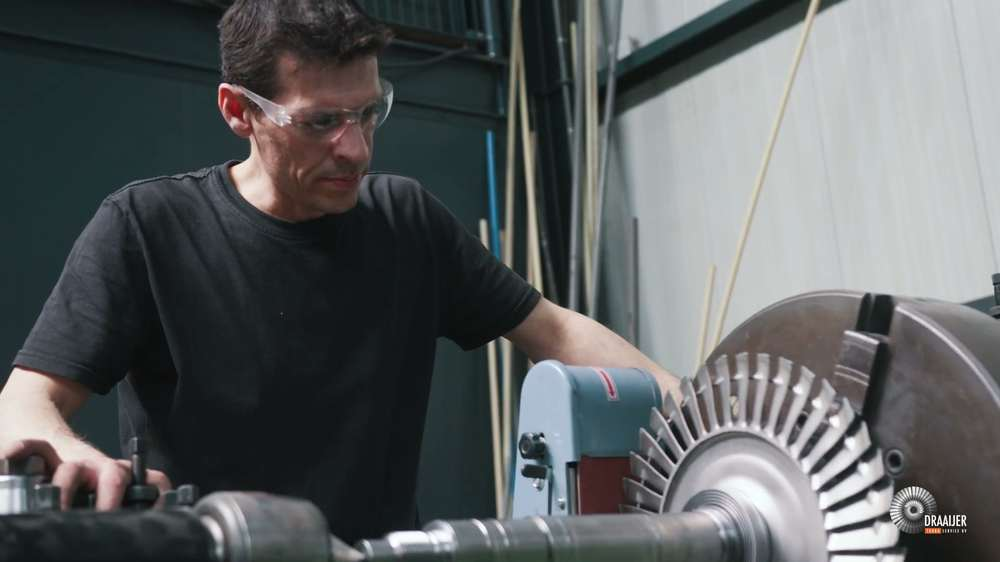
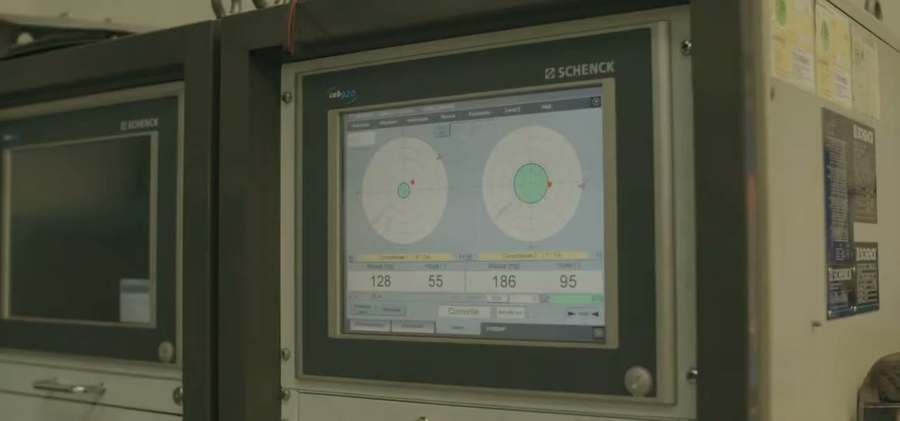
A base de leads é honesta sobre a própria incerteza, e este documento precisa ser também. Estes pontos mudam a priorização se forem verificados.
Das 16 linhas, apenas 5 são de alta confiança. Nove são médias e duas baixas. A própria planilha alerta que células de confiança média e baixa devem ser validadas contra placa do turbo, manual do fabricante ou inspeção em planta.
Inclui os 40 turbos de BorboremaToda a estimativa de mercado deriva de um único relatório técnico de uma única planta, que não está na pasta. Sem ele, a âncora de US$ 76.250 por turbo por ano não tem lastro recuperável.
Recuperar antes de qualquer projeçãoSuape II, Termocabo, Petrolina e Manauara aparecem sob contrato de operação e manutenção da Wärtsilä em comunicados de 2008, 2012 e 2022. Nenhum foi verificado em 2026.
Custo de verificação: quase zeroAs listas nomeiam estaleiros, rebocadores e terminais, mas nenhuma embarcação foi contada. Pode ser o maior segmento da carteira e hoje é uma incógnita completa.
Maior upside não medidoPegue as quatro contas do topo do ranking e responda três perguntas para cada uma: quem opera, quantos turbos, quem é o engenheiro de confiabilidade.
São doze respostas. Cabem em uma semana de trabalho, custam telefonemas e consulta a dado público, e transformam a lista inteira de nomes em pipeline com valor estimado.
Sem elas, qualquer projeção de receita continua sendo exercício sobre premissa não verificada, e é exatamente esse o problema que derrubou o modelo financeiro atual.
Análise de leads produzida em 27 de julho de 2026 a partir da base de prospecção do projeto, cruzada com dados abertos da ANEEL, comunicados oficiais da Wärtsilä, resultados de leilão da EPE e registros públicos. A pontuação de potencial é ferramenta de priorização, não avaliação de mercado. Nenhum dado societário, contratual ou financeiro aqui apresentado substitui verificação direta antes de uso comercial.